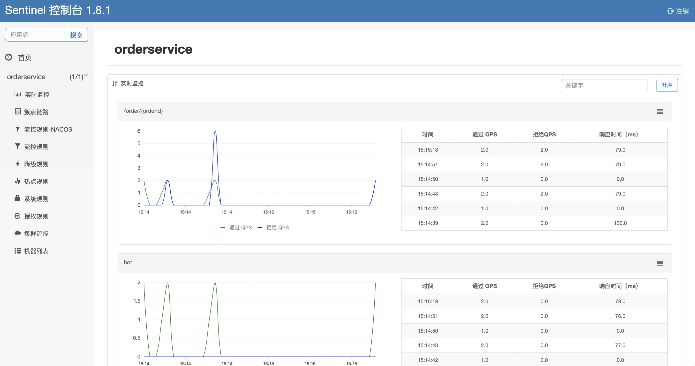

「Sentinel - 1」-- 初识Sentinel & Sentinel-Dashboard
初识Sentinel & Sentinle-Dashboard
Sentinel 基本概念
认识Sentinel
Sentinel 具有以下特征:
- 丰富的应用场景：Sentinel 承接了阿里巴巴近 10 年的双十一大促流量的核心场景，例如秒杀（即突发流量控制在系统容量可以承受的范围）、消息削峰填谷、集群流量控制、实时熔断下游不可用应用等。
- 完备的实时监控：Sentinel 同时提供实时的监控功能。您可以在控制台中看到接入应用的单台机器秒级数据，甚至 500 台以下规模的集群的汇总运行情况。
- 广泛的开源生态：Sentinel 提供开箱即用的与其它开源框架/库的整合模块，例如与 Spring Cloud、Dubbo、gRPC 的整合。您只需要引入相应的依赖并进行简单的配置即可快速地接入 Sentinel。
- 完善的 SPI 扩展点：Sentinel 提供简单易用、完善的 SPI 扩展接口。您可以通过实现扩展接口来快速地定制逻辑。例如定制规则管理、适配动态数据源等。
资源
资源是 Sentinel 的关键概念。它可以是 Java 应用程序中的任何内容，例如，由应用程序提供的服务，或由应用程序调用的其它应用提供的服务，甚至可以是一段代码。只要是通过 Sentinel API 定义的代码，就是资源，能够被 Sentinel 保护起来。常见的，可以使用方法签名，URL，甚至服务名称作为资源名来标识资源。
规则
Sentinel可提供包括流量控制规则、熔断降级规则以及系统保护规则。所有规则可以动态实时调整。
Sentinel 功能和设计理念
流量控制
流量控制在网络传输中是一个常用的概念，它用于调整网络包的发送数据。然而，从系统稳定性角度考虑，在处理请求的速度上，也有非常多的讲究。任意时间到来的请求往往是随机不可控的，而系统的处理能力是有限的。我们需要根据系统的处理能力对流量进行控制。Sentinel 作为一个调配器，可以根据需要把随机的请求调整成合适的形状，如下图所示：

流量控制有以下几个角度:
- 资源的调用关系，例如：资源的调用链路，资源和资源之间的关系；
- 运行指标，例如： QPS、线程池、系统负载等；
- 控制的效果，例如：直接限流、冷启动、排队等。
Sentinel 的设计理念是让您自由选择控制的角度，并进行灵活组合，从而达到想要的效果。
熔断降级
什么是熔断降级
除了流量控制以外，降低调用链路中的不稳定资源也是 Sentinel 的使命之一。由于调用关系的复杂性，如果调用链路中的某个资源出现了不稳定，最终会导致请求发生堆积。这个问题和 Hystrix 里面描述的问题是一样的。
Sentinel 和 Hystrix 的原则是一致的: 当调用链路中某个资源出现不稳定，例如，表现为 timeout，慢响应比例升高，异常比例升高的时候，则对这个资源的调用进行限制，并让请求快速失败，避免影响到其它的资源，最终产生服务雪崩。
服务雪崩
微服务调用链路中的某个服务故障，引起整个链路中的所有微服务都不可用，这就是服务雪崩。
服务雪崩解决方案
- 超时处理：设定资源请求的超时时间，请求时间超过阈值没有响应就返回错误信息，不会无休止等待。
- 此种方式并不能从根本上解决问题，如果在超时之前有大量请求进来还是会造成请求堆积，仍然有节点崩溃的风险。而且超时时间的阈值不好确定，只能根据监控的RT统计数据给出一个相对合适的阈值。
- 个人理解：此方案只能适用于一些简单并且低流量的系统出现弱网或者网络抖动的场景；
- 线程隔离（也称为 舱壁模式）：常见的有两种实现为 线程池隔离 和 信号量隔离。
- 线程池隔离（Hystrix）：每个业务资源单独创建并分配一个线程池，将对业务资源的访问限制在线程池内，即使出现异常，最终也只是导致该线程池阻塞，不会影响其他业务资源。
- 优点
- 实现每个业务的完全隔离；
- 支持主动超时，即线程池中某个线程执行时间过长，可以主动关闭该线程；
- 支持异步调用，即利用线程池的异步特性实现异步调用；
- 缺点：线程上下文的切换会消耗服务器的资源，极端情况下，服务器的CPU利用率飙升，但是处理能力却反而下降，因为服务器在忙着进行线程的上下文切换，而不是在执行业务。
- 场景：适合低扇出场景，即当前服务依赖的其他服务数量少，这样需要创建的线程池数量就少；
- 信号量隔离（Sentinel）：内部维护一个计数器，对每个调用的依赖服务的线程数进行统计，限制对依赖方的并发调用线程数；
- 优点：轻量级，无额外开销；
- 缺点：
- 不支持主动超时，信号量仅仅是一道控制开关的闸门，请求放行之后就无法控制了，请求的超时时间只能依赖RPC框架；
- 不支持异步调用，没有独立线程，无法实现异步调用；
- 场景：适合高频调用、高扇出场景；
- 熔断降级：由断路器统计业务执行的异常比例，如果超出阈值则会熔断该业务，拦截访问该业务的一切请求。
- 内部会维护一个断路器，对单位时间内的业务执行异常比例、错误数量、慢调用比例等进行统计，并结合状态机模式实现断路器状态之间的切换，从而实现对目标场景的熔断降级。
- 流量控制：限制业务访问的QPS，避免服务因流量的突增而故障。
- 是一种故障预防方案。
熔断降级设计理念
在限制的手段上，Sentinel 和 Hystrix 采取了完全不一样的方法。
Hystrix 通过线程池（也称为 舱壁模式）的方式，来对依赖(在我们的概念中对应资源)进行了隔离。这样做的好处是资源和资源之间做到了最彻底的隔离。缺点是除了增加了线程切换的成本（Java的线程映射LWP，所以Java的线程切换意味着用户态到内核态的切换和操作系统的线程调度，是一种很重的操作，会影响服务器的性能），还需要预先给各个资源做线程池大小的分配。
Sentinel 对这个问题采取了两种手段:
- 通过并发线程数进行限制
和资源池隔离的方法不同，Sentinel 通过限制资源并发线程的数量，来减少不稳定资源对其它资源的影响。这样不但没有线程切换的损耗，也不需要预先分配线程池的大小。当某个资源出现不稳定的情况下，例如：响应时间变长，对资源的直接影响就是会造成线程数的逐步堆积。当线程数在特定资源上堆积到一定的数量之后，对该资源的新请求就会被拒绝。堆积的线程完成任务后才开始继续接收请求。
- 通过响应时间对资源进行降级
除了对并发线程数进行控制以外，Sentinel 还可以通过响应时间来快速降级不稳定的资源。当依赖的资源出现响应时间过长后，所有对该资源的访问都会被直接拒绝，直到过了指定的时间窗口之后才重新恢复。
系统负载保护
Sentinel 同时提供系统维度的自适应保护能力。防止雪崩，是系统防护中重要的一环。当系统负载较高的时候，如果还持续让请求进入，可能会导致系统崩溃，无法响应。在集群环境下，网络负载均衡会把本应这台机器承载的流量转发到其它的机器上去。如果这个时候其它的机器也处在一个边缘状态的时候，这个增加的流量就会导致这台机器也崩溃，最后导致整个集群不可用。
针对这个情况，Sentinel 提供了对应的保护机制，让系统的入口流量和系统的负载达到一个平衡，保证系统在能力范围之内处理最多的请求。
Sentinel 是如何工作的
在 Sentinel 里面，所有的资源都对应一个资源名称以及一个 Entry。Entry 可以通过对主流框架的适配自动创建，也可以通过注解的方式或调用 API 显式创建；每一个 Entry 创建的时候，同时也会创建一系列功能插槽（slot chain）。这些插槽有不同的职责，例如:
NodeSelectorSlot负责收集资源的路径，并将这些资源的调用路径，以树状结构存储起来，用于根据调用路径来限流降级；ClusterBuilderSlot则用于存储资源的统计信息以及调用者信息，例如：该资源的 RT, QPS, thread count 等等，这些信息将用作为多维度限流，降级的依据；StatisticSlot则用于记录、统计不同纬度的 runtime 指标监控信息；FlowSlot则用于根据预设的限流规则以及前面 slot 统计的状态，来进行流量控制；AuthoritySlot则根据配置的黑白名单和调用来源信息，来做黑白名单控制；DegradeSlot则通过统计信息以及预设的规则，来做熔断降级；SystemSlot则通过系统的状态，例如 load1 等，来控制总的入口流量；
总体的框架如下:

Sentinel 将 ProcessorSlot 作为 SPI 接口进行扩展（1.7.2 版本以前 SlotChainBuilder 作为 SPI），使得 Slot Chain 具备了扩展的能力。您可以自行加入自定义的 slot 并编排 slot 间的顺序，从而可以给 Sentinel 添加自定义的功能。
下面介绍一下各个 slot 的功能。
NodeSelectorSlot
这个 slot 主要负责收集资源的路径，并将这些资源的调用路径，以树状结构存储起来，用于根据调用路径来限流降级。
1 | ContextUtil.enter("entrance1", "appA"); |
上述代码通过 ContextUtil.enter() 创建了一个名为 entrance1 的上下文，同时指定调用发起者为 appA；接着通过 SphU.entry()请求一个 token，如果该方法顺利执行没有抛 BlockException，表明 token 请求成功。
以上代码将在内存中生成以下结构：
1 | machine-root |
注意：每个 DefaultNode 由资源 ID 和输入名称来标识。换句话说，一个资源 ID 可以有多个不同入口的 DefaultNode。
1 | ContextUtil.enter("entrance1", "appA"); |
以上代码将在内存中生成以下结构：
1 | machine-root |
上面的结构可以通过调用 curl http://localhost:8719/tree?type=root 来显示：
1 | EntranceNode: machine-root(t:0 pq:1 bq:0 tq:1 rt:0 prq:1 1mp:0 1mb:0 1mt:0) |
ClusterBuilderSlot
此插槽用于构建资源的 ClusterNode 以及调用来源节点。ClusterNode 保持资源运行统计信息（响应时间、QPS、block 数目、线程数、异常数等）以及原始调用者统计信息列表。来源调用者的名字由 ContextUtil.enter(contextName，origin) 中的 origin 标记。可通过如下命令查看某个资源不同调用者的访问情况：curl http://localhost:8719/origin?id=caller：
1 | id: nodeA |
StatisticSlot
StatisticSlot 是 Sentinel 的核心功能插槽之一，用于统计实时的调用数据。
clusterNode：资源唯一标识的 ClusterNode 的 runtime 统计origin：根据来自不同调用者的统计信息defaultnode: 根据上下文条目名称和资源 ID 的 runtime 统计- 入口的统计
Sentinel 底层采用高性能的滑动窗口数据结构 LeapArray 来统计实时的秒级指标数据，可以很好地支撑写多于读的高并发场景。

FlowSlot
这个 slot 主要根据预设的资源的统计信息，按照固定的次序，依次生效。如果一个资源对应两条或者多条流控规则，则会根据如下次序依次检验，直到全部通过或者有一个规则生效为止:
- 指定应用生效的规则，即针对调用方限流的；
- 调用方为 other 的规则；
- 调用方为 default 的规则。
DegradeSlot
这个 slot 主要针对资源的平均响应时间（RT）以及异常比率，来决定资源是否在接下来的时间被自动熔断掉。
SystemSlot
这个 slot 会根据对于当前系统的整体情况，对入口资源的调用进行动态调配。其原理是让入口的流量和当前系统的预计容量达到一个动态平衡。
注意系统规则只对入口流量起作用（调用类型为 EntryType.IN），对出口流量无效。可通过 SphU.entry(res, entryType) 指定调用类型，如果不指定，默认是EntryType.OUT。
服务保护框架对比
常见的服务保护框架有：Sentinel 和 Hystrix（已经停止更新维护，从GitHub上看最后一次维护代码都是5、6年前了）
| 核心对比点 | Sentinel | Hystrix |
|---|---|---|
| 隔离策略 | 信号量隔离 | 线程池隔离/信号量隔离 |
| 熔断降级策略 | 基于慢调用比例或异常比例 | 基于失败比率 |
| 实时指标实现 | 滑动窗口 | 滑动窗口（基于 RxJava） |
| 规则配置 | 支持多种数据源 | 支持多种数据源 |
| 扩展性 | 多个扩展点 | 插件的形式 |
| 基于注解的支持 | 支持 | 支持 |
| 限流 | 基于 QPS，支持基于调用关系的限流 | 有限的支持 |
| 流量整形 | 支持慢启动、匀速排队模式 | 不支持 |
| 系统自适应保护 | 支持 | 不支持 |
| 控制台 | 开箱即用，可配置规则、查看秒级监控、机器发现等 | 不完善 |
| 常见框架的适配 | Servlet、Spring Cloud、Dubbo、gRPC 等 | Servlet、Spring Cloud Netflix |
流量整形：将波动的请求流量整形为均匀的流量，避免尖峰流量对服务器的冲击。
Sentinel-Dashboard
Sentinel 控制台启动方式有两种：
- Sentinel官网提供了现成的sentinel-dashboard.jar包，down下来，通过
java -jar sentinel-dashboard.jar命令即可启动，默认端口为8080； - 下载Sentinel的源码，其中有Sentinel-Dashboard模块，使用Maven的
package命令打包，同样使用java -jar xxx就可启动；
启动之后，访问localhost:8080，进入Sentinel Dashboard界面，默认鉴权，账号和密码都为： sentinel

如果要修改Sentinel的默认端口、账户、密码，可以通过下列配置：
| 配置项 | 默认值 | 说明 |
|---|---|---|
| server.port | 8080 | 服务端口 |
| sentinel.dashboard.auth.username | sentinel | 默认用户名 |
| sentinel.dashboard.auth.password | sentinel | 默认密码 |
如：
1 | java -jar sentinel-dashboard-1.8.1.jar -Dserver.port=8090 |
登录之后的主界面如下：
注：
- Sentinel 控制台需要有目标资源被调用，才会展示资源的相关配置模块，如果没有调用请求，控制台没有显示的。如上图中的
orderservice就是因为已经有调用过该应用资源才会展示。 - 其中的流控规则-NACOS是利用Nacos作为注册中心对Sentinel的流控规则进行持久化的模块，需要对Sentinel源码进行修改。
控制台功能
根据上图可以清楚的看出Sentinel控制台提供的能力，本文结合个人实际开发中常用的一些功能模块进行介绍。
- 实时监控
- 簇点链路
- 流控规则（嵌入后续对应模块中）
- 降级规则（嵌入后续对应模块中）
- 热点规则（嵌入后续对应模块中）
- 授权规则（嵌入后续对应模块中）
实时监控
实时监控模块可以进行秒级的实时统计并展示。

簇点链路
簇点链路就是项目内的调用链路，链路中被监控的每个接口就是一个资源。默认情况下sentinel会监控SpringMVC的每一个端点（Endpoint），因此SpringMVC的每一个端点（Endpoint）就是调用链路中的一个资源。
流控、熔断等都是针对簇点链路中的资源来设置的，因此我们可以点击对应资源后面的按钮来设置规则：
参考文档：
 微信
微信